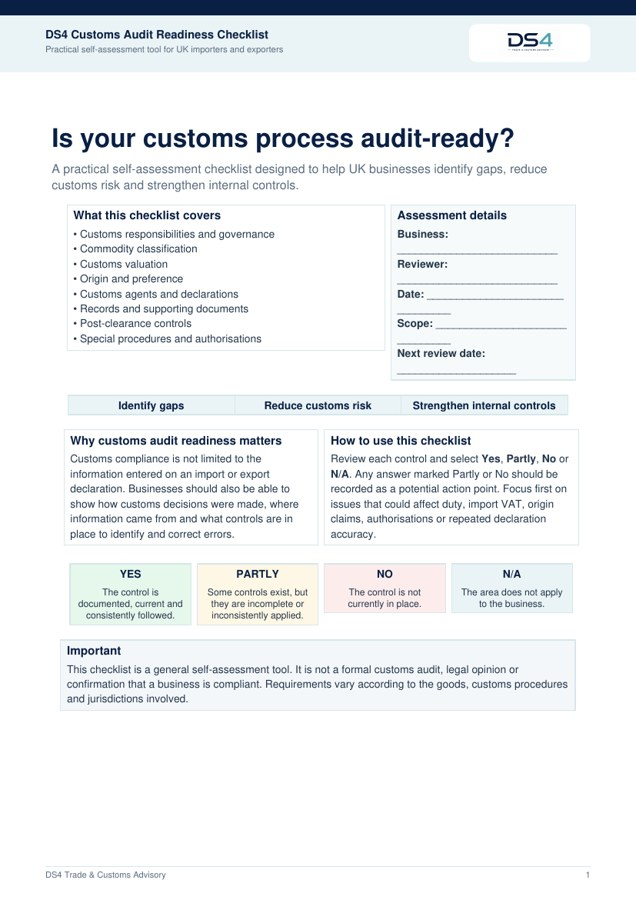
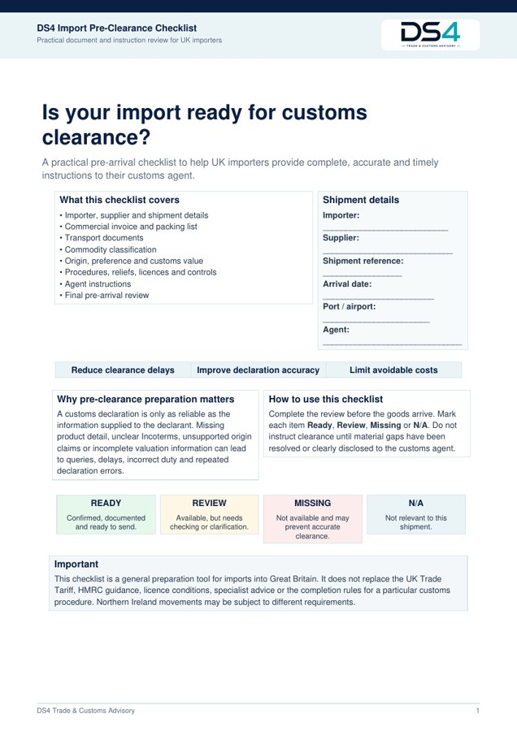
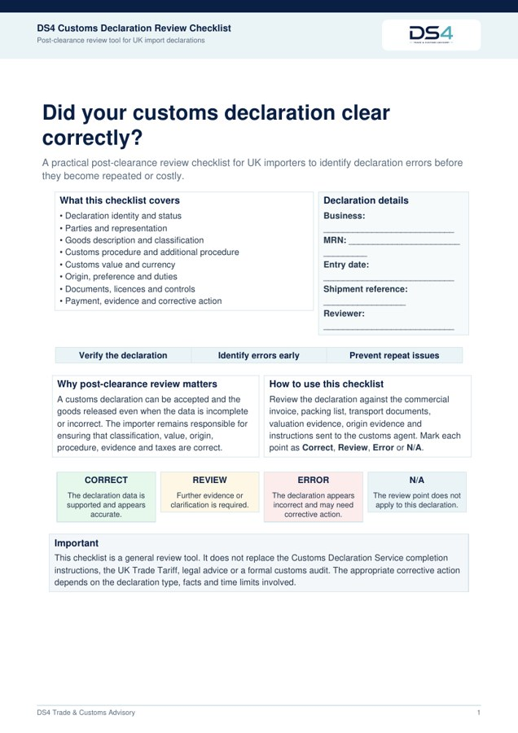
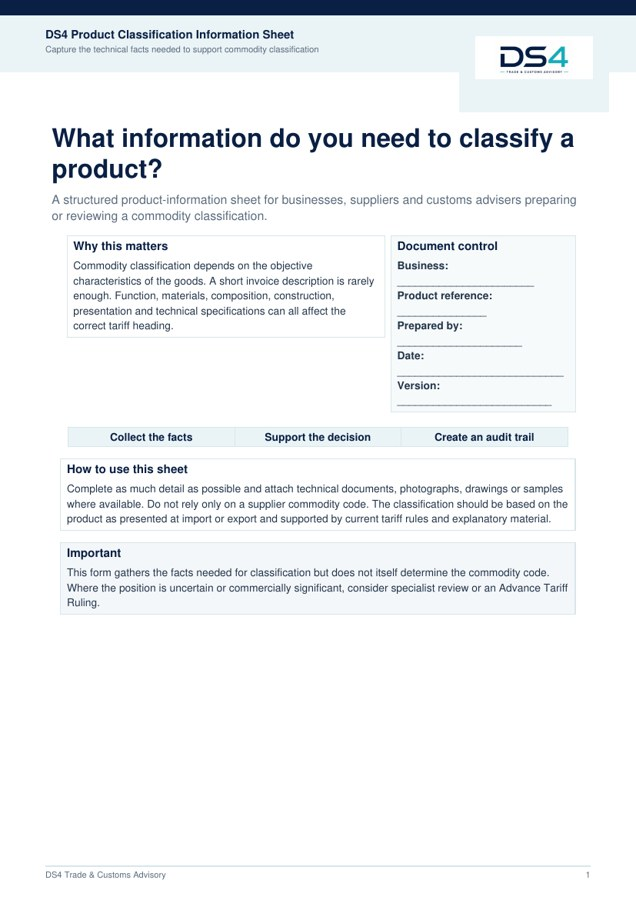
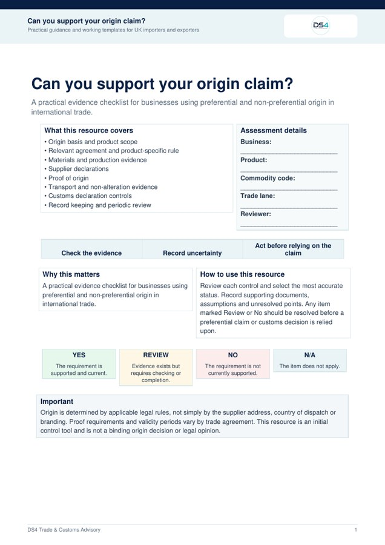
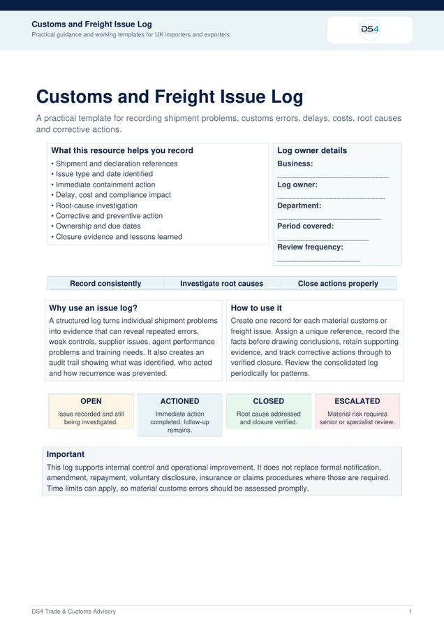

Checklist
Customs Audit Readiness Checklist
Review your customs responsibilities, controls, records and post-clearance processes to identify potential compliance gaps.
10–15 minute review
View PDFDS4 Resource Library
Practical checklists, information sheets and working templates designed to help businesses strengthen customs compliance and manage international shipments more effectively.

Checklist
Review your customs responsibilities, controls, records and post-clearance processes to identify potential compliance gaps.
10–15 minute review
View PDF
Checklist
Check that the information and supporting documents supplied to your customs agent are complete before goods arrive.
5–10 minute review
View PDF
Checklist
Review a completed customs declaration for possible errors in classification, valuation, origin, procedures and supporting information.
10 minute review
View PDF
Information Sheet
Gather the technical, material and commercial information needed before researching or validating a commodity code.
Working template
View PDF
Checklist
Assess whether your origin position and preferential-duty claim are supported by the relevant rules and documentary evidence.
10–15 minute review
View PDF
Template
Record shipment problems, customs errors, costs, root causes and corrective actions in one structured document.
Ongoing working template
View PDFPractical support
These resources provide an initial framework, but every business, product and trade lane is different. DS4 can provide practical support where a more detailed review is required.
Contact DS4